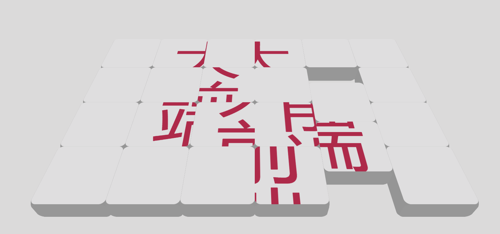
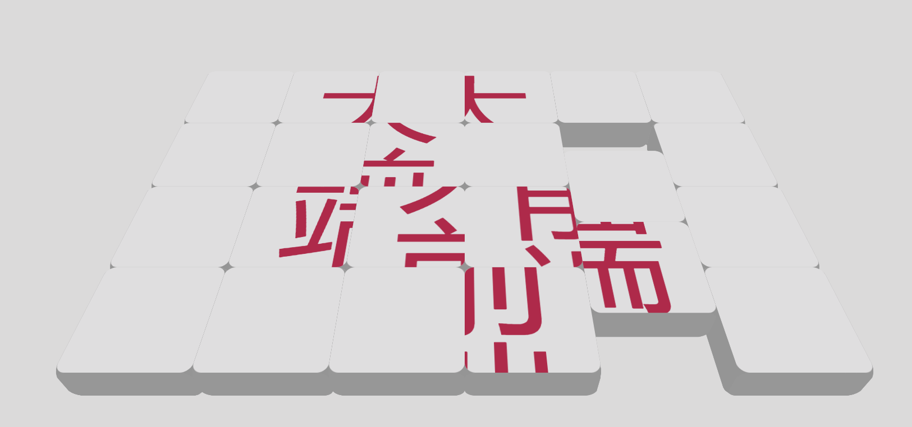
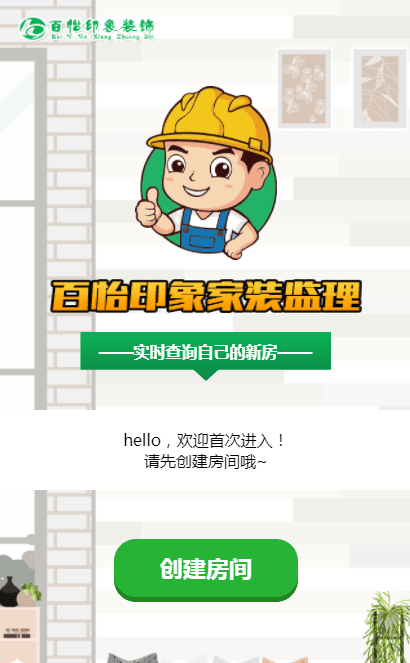
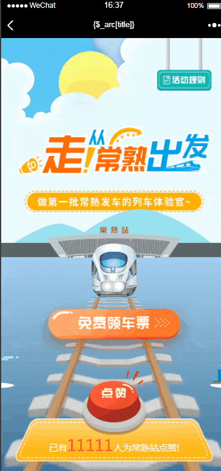
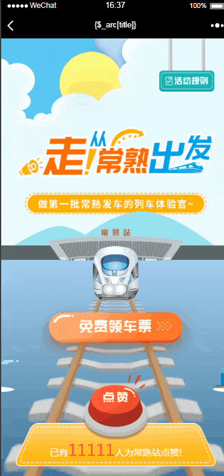
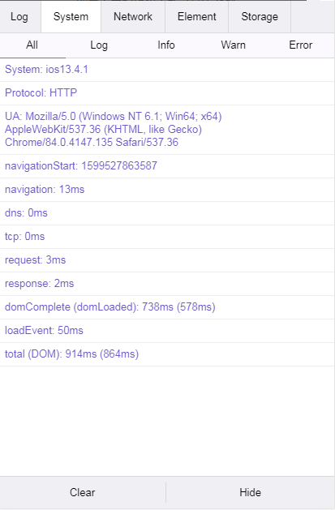
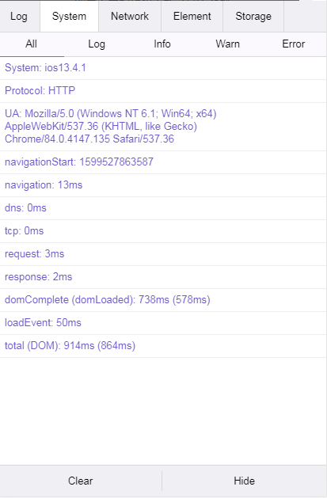
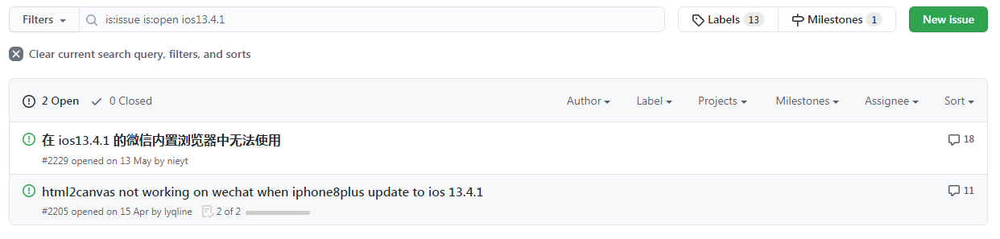
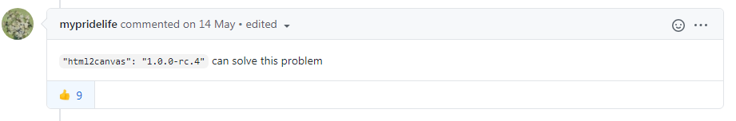

自我介绍

王浩彬
大家知道什么是前端开发吗
 

刚才的用户界面和动画效果是怎么来的呢
是前端工程师用HTML+CSS+JavaScript编写而成的
工作成果
项目示例
大墅尚品
夏日饮品节
高新区答题
性格测试
常熟七五普法
文明健康广告
垃圾分一分
禧徕乐周年庆
卡滋贝诺点亮
十佳污防投票
城市管家投票

家装监理小程序
Loading
活动流程

- 主人公在画面左上方出现，开始行走
- 行走至第一个点时停下脚步，划入问题弹窗
- 回答正确与错误则弹出相应的弹窗
- 之后主人公继续行走，画面也会随之移动
- 如此往复答完5题，跳转到海报页面
- 结果会提交到后台，5题全对则增加抽奖机会
活动要点
- 如何准确地控制行走动画与画面滚动
- 如何切换主人公的行走状态
- 如何切换问题
如何准确地控制行走动画与画面滚动
- 用到的主要框架是GSAP
- 每一个to都是一个动画帧
- 一个动画帧包含了持续时间、变化属性、缓动函数、钩子等要素
- 本活动主要有3类动画帧：人物行走帧、画面移动帧、属性类切换帧
如何切换主人公的行走状态
heroMoveClass

heroStandClass
heroFlippedMoveClass
heroFlippedStandClass
- 主人公由2张图片组成：一静一动
- 切换行走状态本质上是图片显示的切换
- 左右翻转状态是CSS transform的作用
如何切换问题
- 问题由模板渲染而成
- 何为模板渲染？你给我原始数据，我给你处理结果
- 开始答题时暂停动画，根据序号找到问题数据并将其渲染
- 点击提交按钮时判断对错
- 继续答题时将问题的序号+1即可
活动流程

- 倒计时开始，游戏开始
- 各种垃圾会不断地从屏幕上方的随机位置落下来
- 垃圾落到地面上会消失
- 尽可能多地将垃圾拖放到正确的垃圾桶内
- 分类正确则加分，错误则减分
- 1分钟内达到100分以上即可获得抽奖机会
活动要点
- 如何控制垃圾的动画（下落，拖拽等）
- 如何让垃圾下落是随机的
- 如何判断垃圾是否被正确地归类了
如何控制垃圾的动画（下落，拖拽等）
- 本项目主要有3个动画帧：下落动画帧、拖放帧、回收动画帧
- 垃圾默认是下落状态，当用户开始拖拽垃圾时要暂停下落帧
- 松开垃圾时播放回收动画帧，并判断正误
如何让垃圾下落是随机的
- 首先在样式里生成随机的垃圾位置
- 然后在逻辑里将垃圾数组打乱顺序
- 这样不仅位置是随机的，而且每玩一次垃圾本身也是随机的
如何判断垃圾是否被正确地归类了


- 首先要判断垃圾和哪个垃圾桶接触了
- 计算出四个垃圾桶的中心与垃圾中心之间的距离
- 找出最近距离
- 选取最近距离的垃圾桶再判断对错
活动流程

- 进入页面后开始下滑
- 下滑的过程中会不断地出现元素
- 元素出现的动画种类很多
- 当上滑时元素会消失，再次下滑时出现
活动要点
- 如何实现滚动时的“倒带”动画效果
- 如何实现动态渐变文字
如何实现滚动时的“倒带”动画效果

- GSAP于2020年5月底新出的插件——ScrollTrigger
- 当用户滚动到一定距离时才触发动画，并且能够倒放
- 主要还是动画的实现方式
如何实现动态渐变文字

- 首先将文字背景设置成渐变背景
- 将文字颜色设置为透明，背景裁剪方式设置为按文本裁剪
- 这样渐变背景就会被裁剪为文字的形状，再加上动画就完成了
心得体会
动画

 

- 在现实生活中，人们的大脑习惯了被动态的东西所吸引
- 适当的动画效果可以为网页添加有价值的交互和反馈，提升用户的情感体验
- 前端开发中实现动画有以下方式：CSS、SVG、Canvas、JS动画引擎
- 个人经常用CSS实现动画，在掘金上写过一篇文章，链接在此ppt末尾
适配与兼容性

- 在使用一个样式属性或JS语法之前，先要确保大多数系统都支持它
- 页面在每个手机中显示各不相同，要确保页面显示都是正常的
- 每个系统都有各自的特征，要根据这些特征进行适配
一些我遇到的坑
- ios弹出键盘会使元素错位，解决方法是失去焦点时偏移一点距离
- ios用vue的历史路由模式会导致分享失败，原因是ios的浏览历史机制
- 安卓无限加载无法触发，是因为手机大多有虚拟键导致滑不到底
- 有部分手机缓存不易清除，这时考虑给文件加上版本号强制清楚缓存
遇到兼容性难题怎么办？
一调试，二查
一次解决兼容性难题的过程
 



- 梦百合H5活动中，有生成海报这一个功能，大部分手机上都正常，但小部分手机不正常
- 于是我加上了控制台，在系统一栏中发现了问题手机的系统版本
- 然后上谷歌进行搜索，未果后再上github的issue区搜索该系统版本号
- 果不其然有人也遇到了同样的问题，并给出了解决方案
团队沟通
- 项目进度要及时和产品/客户确认
- 多沟通才能正确把握客户的需求
- 项目做好要自测，确保基本无误后再交付产品测试
- 每一个项目都是团队成员共同努力奋斗而成的结晶，因此团队沟通无比重要
总结
- 做完一个活动时，要将遇到的问题统统地总结归纳出来
- 这样下次遇到同样的问题时就能立马解决，保证项目的进度了
未来规划
持续学习
- 前后端分离
- 动画、交互
- 工程化、自动化
- 性能优化
- ......
输出更多干货
- 博客写作
- 开源项目
- 技术分享
我的博客


Thank you!